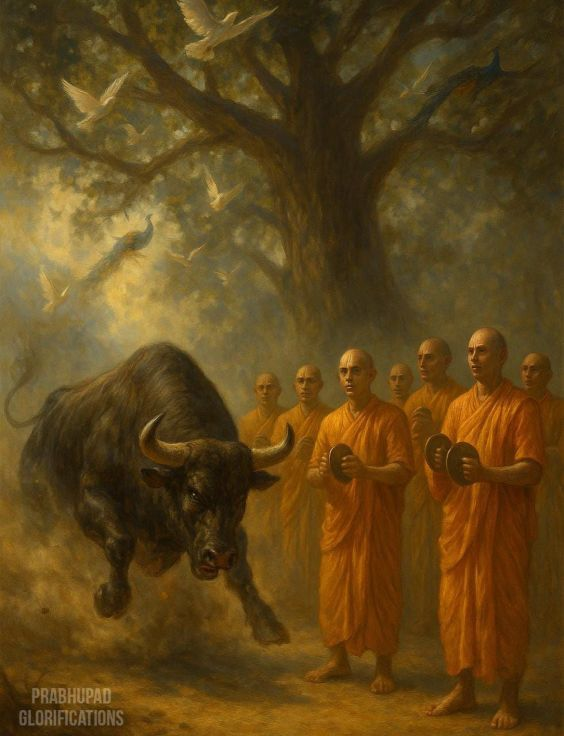

Sādhu Killer Bull
Posted on : 2nd May, 2024

“Tell him about the bull” Achyutananda says.
“Oh yes,” Sudama laughs. “That's already a Vrindavan legend. When we first came here, a very mean bull was living under this tamal tree. He was famous as a sadhu killer, and he thought this land was his. He wouldn't let any other living entity on this side of the road. So, as you might know, Śrīla Prabhupāda instructed us to perform sankirtan from Rādha Dāmodar to Raman reti everyday. When we first came here chanting and ringing cymbals, the bull was furious. He stomped the ground and charged us, and we had to run for our lives.”
“Lokanath almost got gored.” Hrishikesh says.
“For seven mornings in a row we confronted the bull with sankirtana” Sudama continues. “Then the bull disappeared and never returned. The people who live around here say its a miracle.”
~ Hayagriva Dāsa, Vrindāvan Days pg. 101